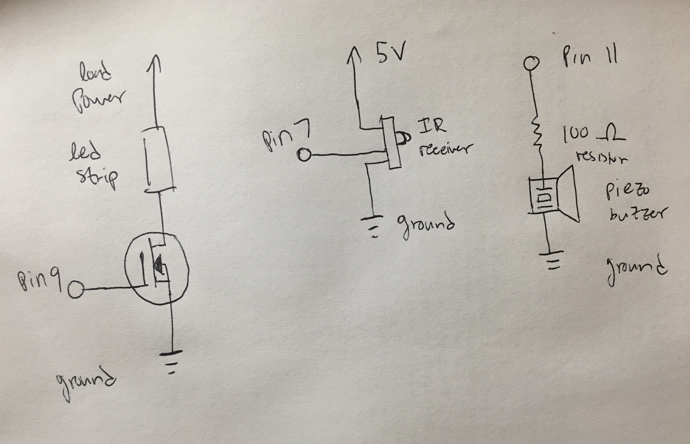
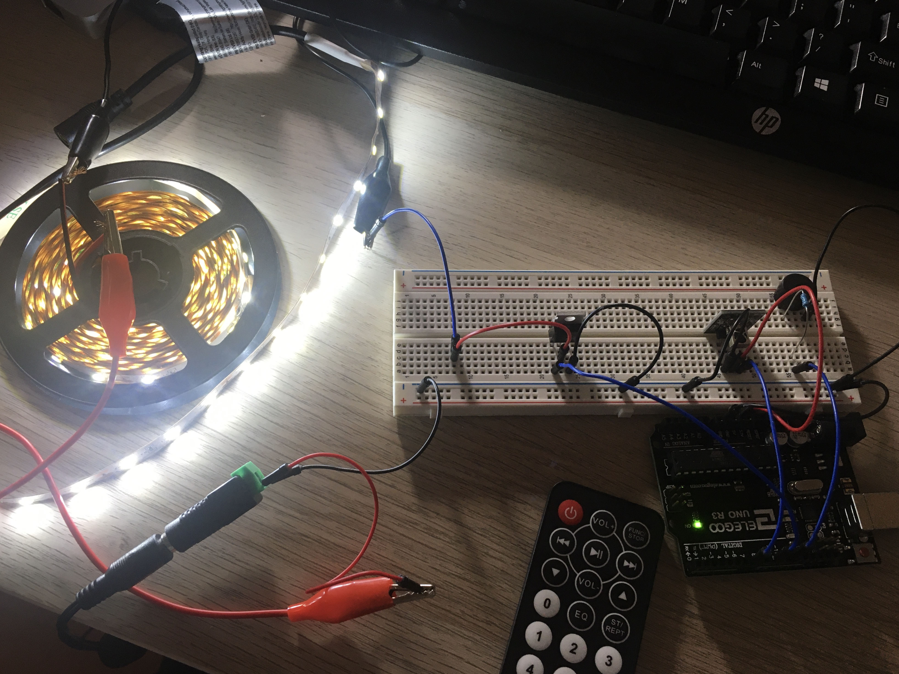
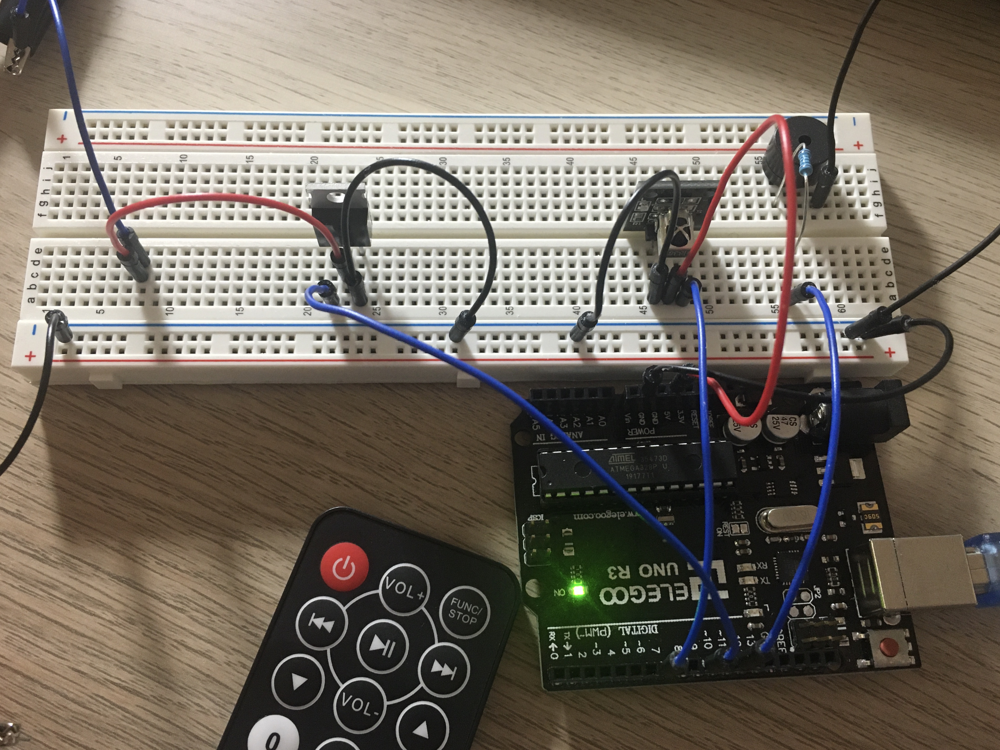

Schematic

There were a total of three separate chunks, or parts, to the entire component. I found it easiest to imagine each
as its own part, albeit having all the grounds connected. The first chunk was the part with the N-MOSFET transistor
and the LED strip powered by a 12V/2A external power supply, controlled by pin 9. The 2nd chunk had the IR receiver,
controlled by pin 7 and powered by the built-in 5V pin. The 3rd chunk was a piezo buzzer connected to pin 11 with a
100 ohm resistor.
Circuit (Image)

This first image shows the entire circuit while the LED strip is on. The LED strip uses 12V and is 18W, so using the
P = V*I equation, we can find that 18W/12V = 1.5A, which is within the maximum of 2A supplied by the adapter.
No additional resistor is needed since each individual LED is in parallel and has a resistor already. Meanwhile,
the N-MOSFET transistor has a maximum rating of 60V and 30A (https://pdf1.alldatasheet.com/datasheet-pdf/view/171275/UTC/30N06L.html).
As an aside, for the final project, I'm thinking of using a 2 meter NeoPixel RGBW LED strip. Using a save 60mA per LED calculation,
I figured I needed a power source (5V max) with a 10A output to be able to handle the LEDs, so I'll have to buy another adapter.
The contrast from the LED strip makes it difficult to see, so there is a second image below with the lights off
and with a focus on the breadboard.

In this image, it is easier to see what's on the breadboard. The IR receiver is hooked up to the MCU. According to
its data sheet (https://html.alldatasheet.com/html-pdf/1132465/ETC2/VS1838B/111/1/VS1838B.html), the IR receiver
can handle up to 5.5V, so using the 5V pin works perfectly. Using the multimeter, it looks like the accompanying
board the IR receiver is on includes an internal resistor, so no external resistor is used.
For the piezo buzzer, a 100 ohm resistor is used for the sake of decreasing the buzzing noise—it just got too annoying
when completely unrestricted. The piezo was controlled via pin 11.
Firmware (Code Snippet)
// Utilize the IRremote library
#include IRremote.h (NOTE: < and > removed due to HTML)
// Set the pins for IR receiving, LED strip, and piezo buzzer
const int RECV_PIN = 7;
const int ledStrPin = 9;
const int piezoPin = 11;
// Setup via IRremote library to receive and decode signal
IRrecv irrecv(RECV_PIN);
decode_results results;
void setup(){
// Setup for println to display in serial monitor
Serial.begin(9600);
// Allow IR input to be detected
irrecv.enableIRIn();
// Blink Arduino on-board LED when signal received
irrecv.blink13(true);
// Set LED strip pin as output pin
pinMode(ledStrPin, OUTPUT);
}
void loop(){
// Use the IRremote library to get the results from the IR signal
if (irrecv.decode(&results)){
// Temporary storage for value during initial testing via serial monitor
// String ir_value = results.value;
// Serial.println("IR_VALUE:" + ir_value);
// Use a switch statement to detect certain button pushes and then react a certain way
switch (results.value) {
// Case for when the decrease button (down arrow) is pushed on remote
case 16769055:
// Print out action to the serial monitor
Serial.println("Decrease button!");
// Use analogWrite to turn off the LED strip
analogWrite(ledStrPin, 0);
// Exit the switch statement to allow continuation of program
break;
// Case for when the increase button (up arrow) is pushed on remote
case 16748655:
// Print out action to the serial monitor
Serial.println("Increase button!");
// Use analogWrite to turn on the LED strip
analogWrite(ledStrPin, 255);
// Exit the switch statement to allow continuation of program
break;
}
// Be ready to detect the next IR button signal
irrecv.resume();
// Buzz the piezo buzzer to use as auditory signal
tone(piezoPin, 1000, 300);
}
}
The code is based off of Derek Repsch's post in the HCDE 439 Slack—he helped me become aware of the existence of
switch and case, which I was then able to search for documentation online to use (https://www.arduino.cc/reference/en/language/structure/control-structure/switchcase/).
Instead of converting the signal to HEX code, I just used the non-HEX numerical results for cases.
Since I had a piezo buzzzer tone function "and" an IR receiver being used at the same time, an error would occur where the two
would use the same timer, causing a compilation error. The fix (https://forum.arduino.cc/index.php?topic=120955.0) was to hop into the Arduino documents folder, find the IRremote library,
and edit a couple lines in the "boarddefs.h" file to remove the interference. The piezo buzzer was added as a way to signal to a user
that the program is ready to take the next signal from the remote, since sometimes a button could possibly take longer
to run through all steps if it were programmed more complex—in this case, it was just turning on and off the light, but the audio
cue was still nice to have.
Circuit Operation (Animated GIF)

The GIF shows the remote's decrease volume being pressed to turn off the LED strip and the remote's increase volume
button being pressed to turn on the LED strip. With a little more programming, each button could cause the LED strip
to react in a specific way. Unfortunately, the GIF does not have audio, but also imagine the piezo buzzer buzzing
after each button press!